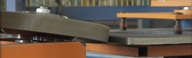
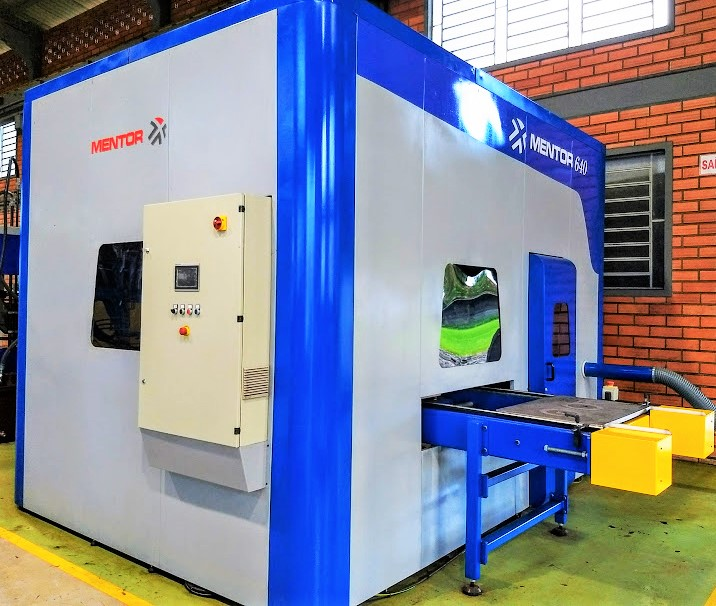
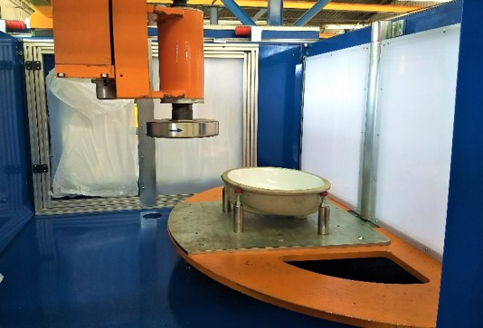
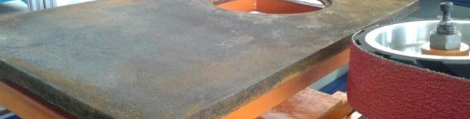

Deburring Machines

Mentor Automação offers various types of deburring equipments, being divided into grinding wheels and grinding with sandpaper.
Deburring with Grinding Wheel
|

|
Flat Sheet Deburring
- Deburring plate surface;
- NHP® Diamond Grinding Wheel roughing;
- NHP® finishing wheel;
- Production of 25 pieces/hour;
- 180% productivity gain.
|
Ceramic Grinding Machine
- Three axis CNC;
- Feeding with turntable;
- Dynamic reading of surface height;
- NHP® Diamond Grinding Wheel roughing;
- Production of 26 pieces/hour;
- 140% productivity gain.
Watch this machine in operation
|

|
Deburring with Sandpaper

- Automatic plate feeding;
|
- Sandpaper with great removal power;
|
- Deburring the side flap of the plate;
|
- Six distinct models of parts;
|
- Quick change models;
|
- Model exchange at HMI;
|
- Safety and ergonomics;
|
- Quality in finishing;
|
- 90% productivity gain.
|